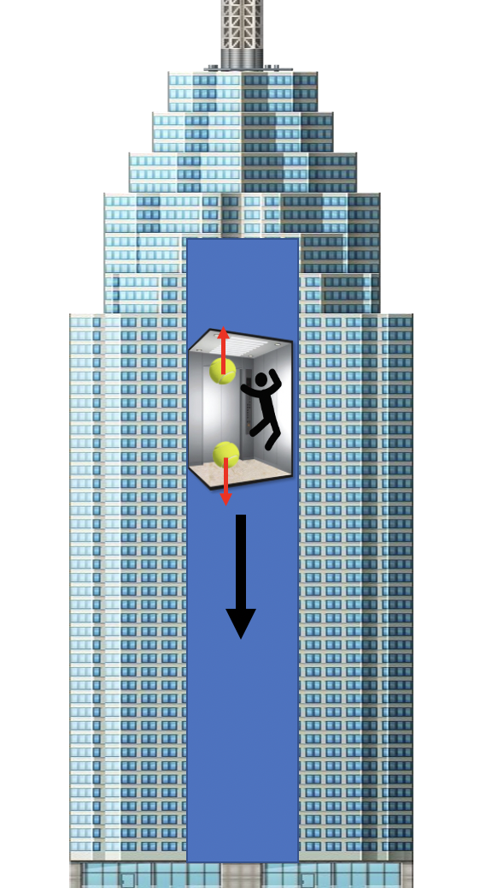

Forrige side🙂 🙁InertialsystemerPADLET

MEN MERK: Denne effekten er SVÆRT liten!!! Forskjellen i tyngdeakselrasjon for ballen øverst og nederst er veldig liten. Sannsynligvis vil ikke denne effekten være målbar. Vi har derfor det som vi kaller for et lokalt inertialsystem. Hvis du ikke kan måle at du har avvik fra et inertialsystem så er du for alle praktiske formål i et inertialsystem selv om dette inertialsystemet er begrenset i rom og i tid. Og i et inertialsystem vet vi at vi har Lorentzgeometri! Der er spesiell relativitetsteori gyldig og vi slipper å bruke det kompliserte ßuttrykket for Δs!!